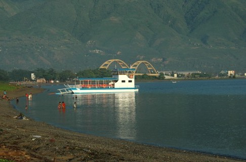

Central Sulawesi
Talise Beach
Talise beach in Palu, Central Sulawesi, since the 1990's to 2000, identical to the sex trade. As the sunset in the western city of Palu, at that time also started up a dimly lit stalls visitors added confidence that the stall owners also provide women entertainers. Hence, almost every night queues two-or four-wheel vehicles meet the Talise beach. They come not just to enjoy the traditional drinks such as sarabba (water mixed with a little ginger and coconut milk), fried bananas, banana gepe (banana flavored grilled cheese or brown sugar) and roasted corn, but also to seek comfort women. Government Palu assess the situation can not be left continuously.Moreover, the location of Talise beach in the middle of town so it makes a negative impression for guests who come to the city of Palu. So then the City of Palu forbids women entertainers operate in this Talise beach. Raids were carried out. One by one commercial sex workers (CSW) was arrested and was scouted in Kalukubula Social Institution. Finally, Talise beach clean from dimly lit stalls, and that there is only a shop that sells drinks and food typical of Kaili. The Kaili is the original ethnic Palu. Now, Talise beach night become tourist attractions, where residents can enjoy the beauty of Palu Bay bordering the Makassar Strait. The lights of fishing boats were moving in the middle of the bay because diempas waves. The atmosphere becomes more complete, after the Hammers IV Bridge building which was inaugurated by President Susilo Bambang Yudhoyono early May. Not far from Talise beach, only about three kilometers to the west, there is a beach Taman Ria. On the beach is also sold traditional foods such as kaledo (beef bone soup) are eaten with cassava or rice, uvempoi (sour soup of cow bones) are eaten with burasa (coconut rice wrapped in banana leaves), and uta chest (sort of chicken opor) . Ria Park Beach there are also a restaurant that provides a complete archipelago menu. Menu favorite grilled fish. Here are provided all types of fish such as bubara, red snapper, rabbitfish, coral trout, and various other kinds of export quality fish. Palu is a very beautiful city. The city is known as the "City of Three Dimensions", because there is a beautiful Palu Bay, surrounded by mountains and is equipped with a long river which divides the city.This river is the estuary of Lake Lindu in Lore Lindu National Park.
Togean Island
Togean Islands. A community - based ecotourism as well as in conserving the biodiversity. A bewildering array of tropical rain forest covered six islands formed by volcanic activity. Situated in the vicinity of equator. This enchanting archipelago is one of the jewels of Central Sulawesi. Stunning reefs, small isolated white sandy beaches, traditional fishermen village of a Bajau, verdant rainforest have left many a world weary travel searching for superlatives.

Ancient Lake Poso
For a refreshing getaway from the normal city-life routine, the quaint villages and fresh air of the less explored Lake Poso may be just what you need to revitalize your mind, body and spirit. Its waters are deep blue and aquamarine and it is one of the clearest lakes in the world. Lake Poso is an ancient lake located in the Poso District in Central Sulawesi, and is the third largest lake in Indonesia after Lake Toba and Lake Singkarak inSumatra. The lake spans across an area of 32,000 hectares, and, with a depth of 515 meters at its deepest points, it is almost three times deeper than the Java Sea which has a mean depth of 151 meters only. Lying just north of the Toraja highlands in South Sulawesi, Lake Poso is bordered by the Pendolo town at the south end of the lake and Tentena at the north, with several smaller villages scattered in between. The water of the lake pours in a river and out into the Tomini Bay by the town of Poso. Silver and yellow eels criss-cross the lake together with two endemic species of fish. The center of the lake is crystal blue, outlined by a shade of green and bordered with soft white and golden sands. Rolling hills surround this enchanting lake, covered with stretches of bright, green rice fields, fragrant clove trees and tropical forests. Here are found anoas and babirusa (wild boar), endemic to Sulawesi. At Bancea near Pendolo is the Bancea Orchid Garden which holds a large collection of orchid species, among which is the rare Black Orchid. There is also a strange phenomenon about Lake Poso. When night falls, a vivid, bright light is often seen glimmering beneath waters. Sometimes stationary, but sometimes moving rapidly from bank to bank across the lake. Some people attribute it to Indonesia’s counterpart of the mysterious “Nessie” in Scotland’s Loch Ness. Since its first sighting, the tale has evolved from a light within the lake to a light that hovers above the lake and around the nearby hills and fields. This spectacle has been observed for many years, yet the source of the mysterious light has never been confirmed.
Ancient Lake Poso
The city of Palu, capital of the province of Central Sulawesi sits on the “neck” of the K shaped island of Sulawesi. Palu is the gateway to the Lore Lindu National Park and the mysterious Bada valley, where lie scattered megalithic statues resembling those on Easter Island, and further east is the diving haven of theTogean Islands. Although most of Central Sulawesi faces the large Bay of Tomini, Palu, however, faces the other way, facing west to the Straits of Makassar from the base of the narrow Talise Bay. Here the Ponulele bridge crosses Talise Bay, connecting West Palu with East Palu. The bridge is a favorite spot for lovers to watch the glowing sunset when the last golden rays of the sun are reflected by the glistening waters of the bay. And as darkness falls, the lights on both sides of the bay perfect this romantic get away. This town Is backed by the Gawalise mountains to its west and the Rovigadi mountain range to its east and is fronted by a number of white beaches, including the Tanjung Karang and Taman Ria beaches, as well as the Kampung Nelayan or the Fishermen’s Beach. Tanjung Karang has beautiful crystal clear diving sites, while closer to shore the beach is popular for jet skiing or banana boating and other water sports. Further out to sea is Pulau Lingayan, which offers beautiful coral reefs, home to colorful tropical fish. Being the capital of the province, Palu is the gateway to any visit to the wonders of Central Sulawesi, although today flights are also available to the town of Poso, nearest point to visit Lake Poso, or to Luwuk, the airport for those wishing to dive in the amazing Togean Islands.